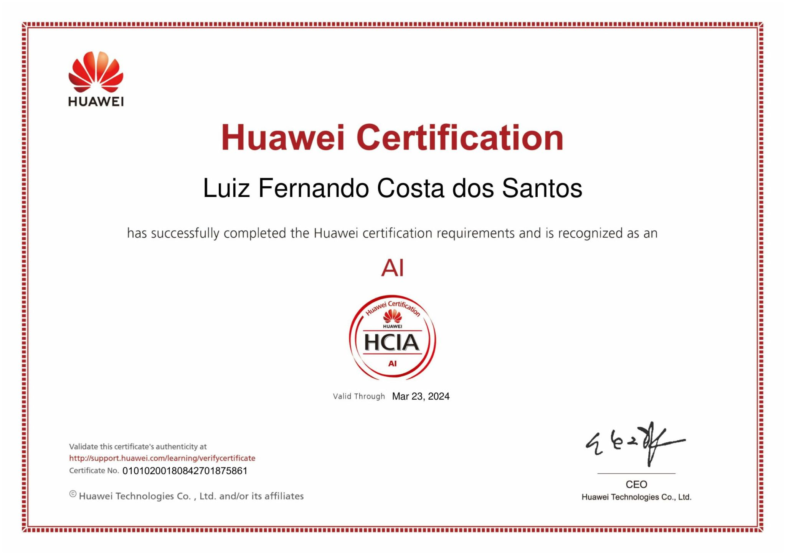

LF826-HB-(1)Section 2Systems data
Experience
Four years of machine learning in fintech, from an internship on Nubank's credit models to financial transformers at CloudWalk.
2.1
CloudWalk
CloudWalk is the Brazilian fintech behind InfinitePay (Brazil) and JIM (US), and also owns Pierre Finance: 7M+ monthly active users and a ~$1.7B annualized revenue run-rate, growing 100%+ year over year.
2.1.1
Data Science Specialist.Sep 2026 to present
Promoted to Data Science Specialist, reporting directly to the founder and CEO. I'm focused on the next generation of financial models: a tokenizer for financial events (implemented in Rust), pre-training and fine-tuning transformer-based models on GPU clusters.
2.1.2
Data Scientist III.Jan 2026 to Sep 2026
As part of the credit team, I was responsible for the creation, deployment, and maintenance of credit models, as well as monitoring and analyzing all data related to credit operations.
I co-created a model registry, serving, and inference platform that scaled the credit team's loan decisioning infrastructure from 1 to 20+ models, including GPU-accelerated pipelines and online inference for credit card products, scoring more than 7M users.
Company figures as of March 2026, as published in CloudWalk's newsroom.
2.2
Nubank
The largest digital bank outside Asia, serving 100M+ customers. Four roles across the Credit and Platform teams.
2.2.1
Machine Learning Engineer, Platform Team.Sep 2025 to Dec 2025
Spearheaded a centralized Feature Store standardizing feature discovery and versioning for 30+ teams. Architected data immutability systems with Delta Lake, built low-latency APIs for global feature discovery, and developed an MCP to help agents interact with the Feature Store.
2.2.2
Machine Learning Engineer, Credit Team.Sep 2024 to Sep 2025
Engineered a Python model orchestration library (batch/real-time), cutting average deployment time by 60%. Led the migration of monitoring services to a Spark/Scala framework (5h to <1h contribution lead time) and deployed a flexible binning framework (3 months to 2 weeks change cycles). Mentored two junior engineers.
2.2.3
Junior Machine Learning Engineer.Dec 2023 to Sep 2024
Refactored, retrained, and redeployed major versions of Nubank's primary risk and spend model, improving performance by nearly 2 percentage points. Developed architectural tests for a new population, impacting 500k+ potential clients.
2.2.4
Machine Learning Engineering Intern.Sep 2022 to Dec 2023
Migrated the Curves framework to a modern stack, boosting Business Analytics productivity. Integrated two new data providers into the primary credit risk pipeline (batch and online) and retrained key model versions.
2.3
Machine Learning Engineer, Research Project
Deployed Random Forest models on a 50,000-point solar characterization dataset, increasing the plant's energy generation efficiency by up to 12%.
Built a feature serving system using Airflow and InfluxDB to process IoT sensor data with sub-500ms latency, enabling real-time analysis for energy optimization.
2.4
Data Engineer, Research Project
Built robust ETL pipelines from transactional SQL databases to business dashboards, significantly improving the company's analytical capabilities and data-driven decision making processes.
2.5

Cloud AI Training PB
Monitored and developed research activities within the Artificial Intelligence Training scope (HCIA AI 3.0 Certification). Created tooling to facilitate the students' routine.